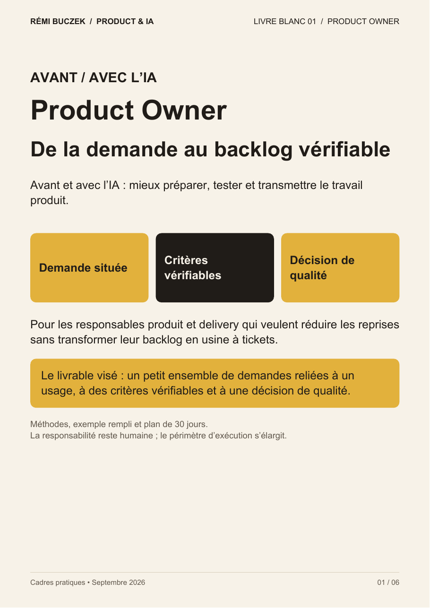
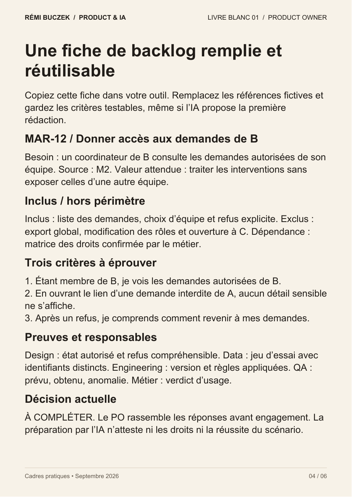
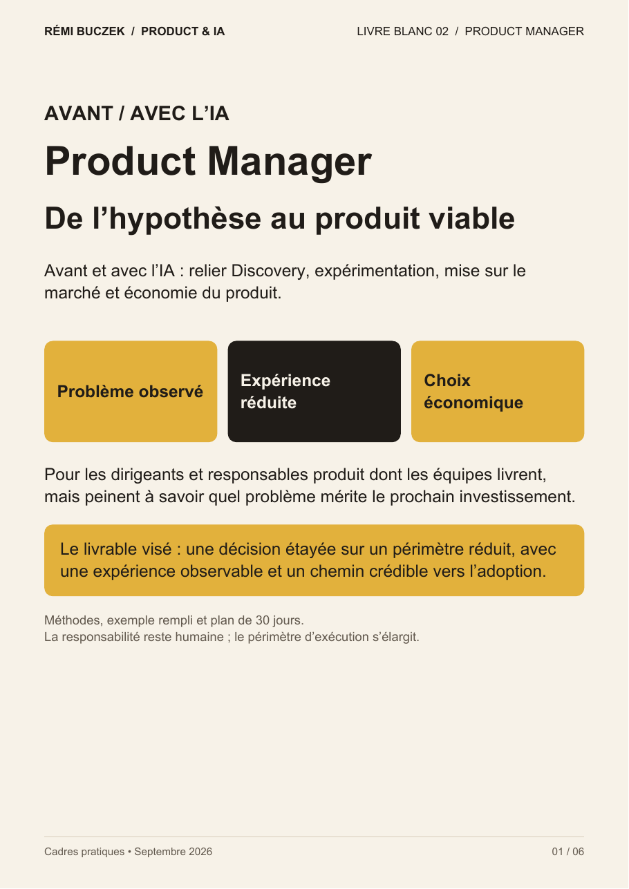
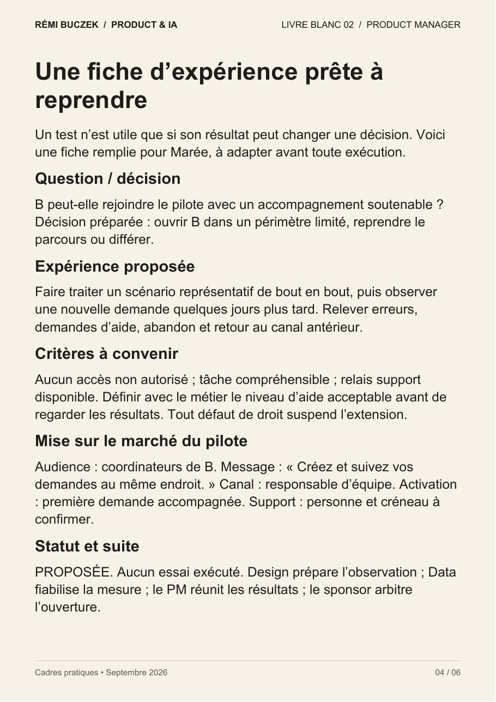
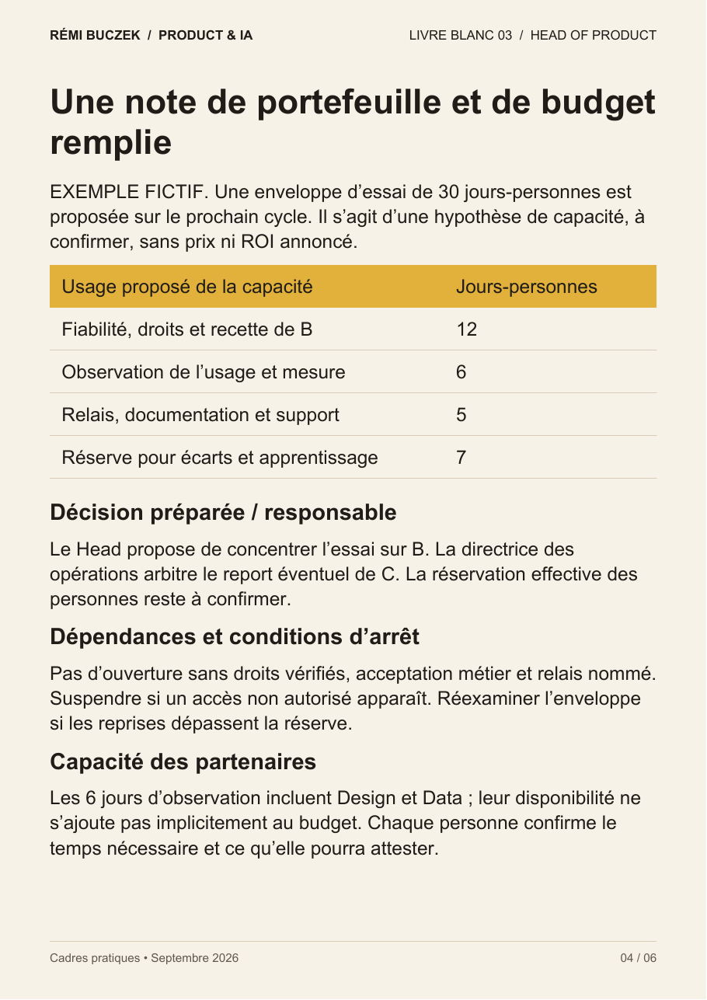
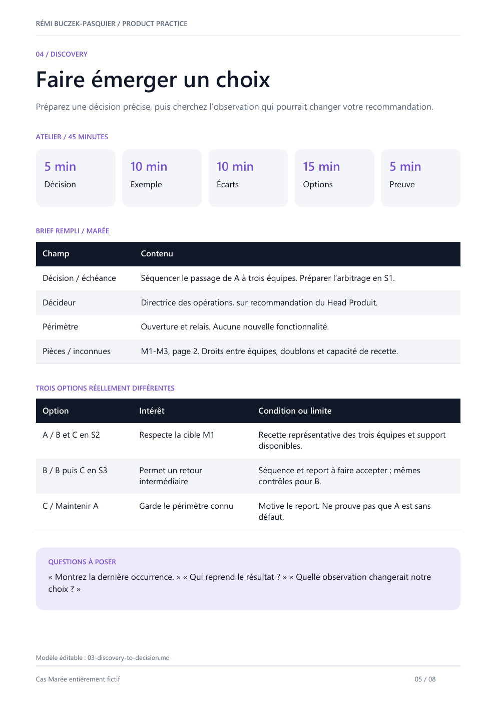
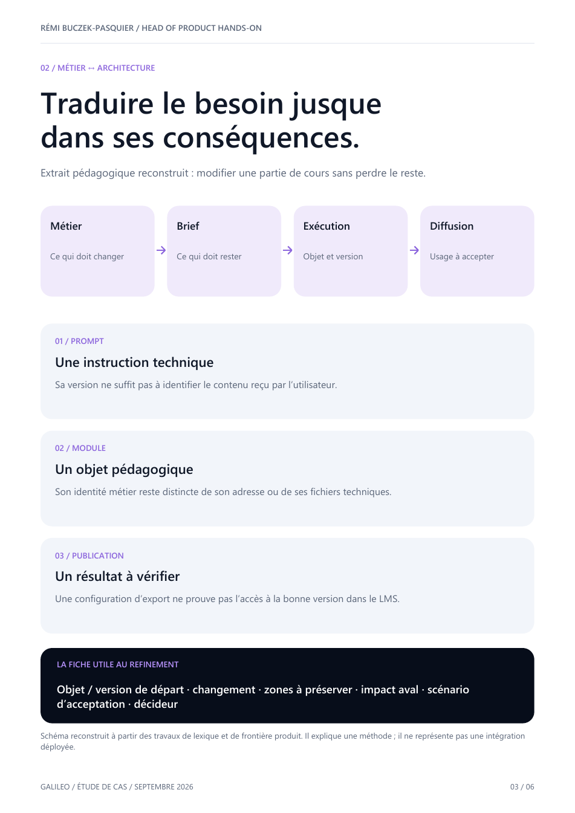

Guides · Modèles · Études de cas
L’IA dans votre métier.
Des idées à la pratique.
Trois livres blancs, un kit et des retours d’expérience. Découvrez les extraits, puis demandez le document qui vous intéresse.

Livre blanc · Product Owner · 6 pages
De la demande au backlog vérifiable
Relier les demandes à des décisions et préparer un backlog que l’équipe peut revoir.
- Six comparaisons pour situer l’apport de l’IA dans le travail du PO.
- Une fiche de travail remplie sur Marée, un cas fictif.
- Des mesures et un plan d’action sur 30 jours.
Lire un extrait du livre

Extrait du livre · Cas Marée fictif. Cliquez pour le lire en grand.
Ouvre votre messagerie avec la demande préparée. Vous pouvez aussi écrire à remibuczek@gmail.com.

Livre blanc · Product Manager · 6 pages
De l’hypothèse au produit viable
Utiliser l’IA pour préparer les décisions Produit : ce qu’il faut apprendre, essayer et vérifier.
- Six comparaisons appliquées au métier de Product Manager.
- Un exemple rempli sur Marée, un cas fictif.
- Une trame de mesure et un plan d’action sur 30 jours.
Lire un extrait du livre

Extrait du livre · Cas Marée fictif. Cliquez pour le lire en grand.
Ouvre votre messagerie avec la demande préparée. Vous pouvez aussi écrire à remibuczek@gmail.com.

Livre blanc · Head of Product · 6 pages
Stratégie, portefeuille et responsabilité
Organiser le travail augmenté par l’IA tout en gardant la responsabilité des priorités et des décisions.
- Six comparaisons pour la direction Produit.
- Un exemple de travail sur Marée, un cas fictif.
- Une fiche remplie, des mesures et un plan sur 30 jours.
Lire un extrait du livre

Extrait du livre · Cas Marée fictif. Cliquez pour le lire en grand.
Ouvre votre messagerie avec la demande préparée. Vous pouvez aussi écrire à remibuczek@gmail.com.

Kit · Guide de 8 pages + 4 modèles éditables
Le kit Head of Product hands-on
Les supports pour organiser les responsabilités, préparer les livraisons et relier le travail des agents aux décisions de l’équipe.
- Modèle de responsabilités et plan de livraison.
- Trame Discovery → décision.
- Contexte et briefs d’agents, avec l’exemple fictif Marée.
Voir un extrait du dossier

Extrait du kit · Cas Marée fictif. Cliquez pour le lire en grand.
Ouvre votre messagerie avec la demande préparée. Vous pouvez aussi écrire à remibuczek@gmail.com.

Étude de cas · Galileo · 6 pages
Faire passer un produit IA du 1 au 10
Une mission Produit au sein d’un projet collectif : relier les besoins des écoles, les choix d’architecture et la préparation des livraisons.
- Les familles de livrables et les responsabilités.
- Le contexte de travail et les agents utilisés pour préparer les décisions.
- Une grille pour cadrer, construire, ouvrir et transmettre.
Voir un extrait du dossier

Extrait du dossier · Reconstruction pédagogique. Cliquez pour le lire en grand.
Ouvre votre messagerie avec la demande préparée. Vous pouvez aussi écrire à remibuczek@gmail.com.

Étude de cas · EPEX SPOT · 3 pages
L’infrastructure qui rend l’IA exploitable
Stratégie Produit et coordination d’une plateforme d’API : les décisions, les dépendances et le travail de quatre équipes en France et en Allemagne.
- Le périmètre de la mission et la contribution Produit.
- Les arbitrages entre usages, API et exigences de la plateforme.
- Une matrice de décision réutilisable.
Voir un extrait du dossier

Extrait du dossier · Grille pédagogique. Cliquez pour le lire en grand.
Ouvre votre messagerie avec la demande préparée. Vous pouvez aussi écrire à remibuczek@gmail.com.
La méthode
6
gestes pour travailler avec les agents
Méthode · 8 pages
Construisez votre product team agentique
Six gestes pour intégrer des agents dans le travail d’une équipe Produit.
- Choisir une décision et organiser le contexte.
- Déléguer une tâche et relier les réunions au contexte.
- Revoir les changements, tester et transmettre.
Ouvre votre messagerie avec la demande préparée. Vous pouvez aussi écrire à remibuczek@gmail.com.
Donnons vie à votre projet.
Votre métier, vos priorités, vos équipes. Construisons l’IA qui leur sera utile.